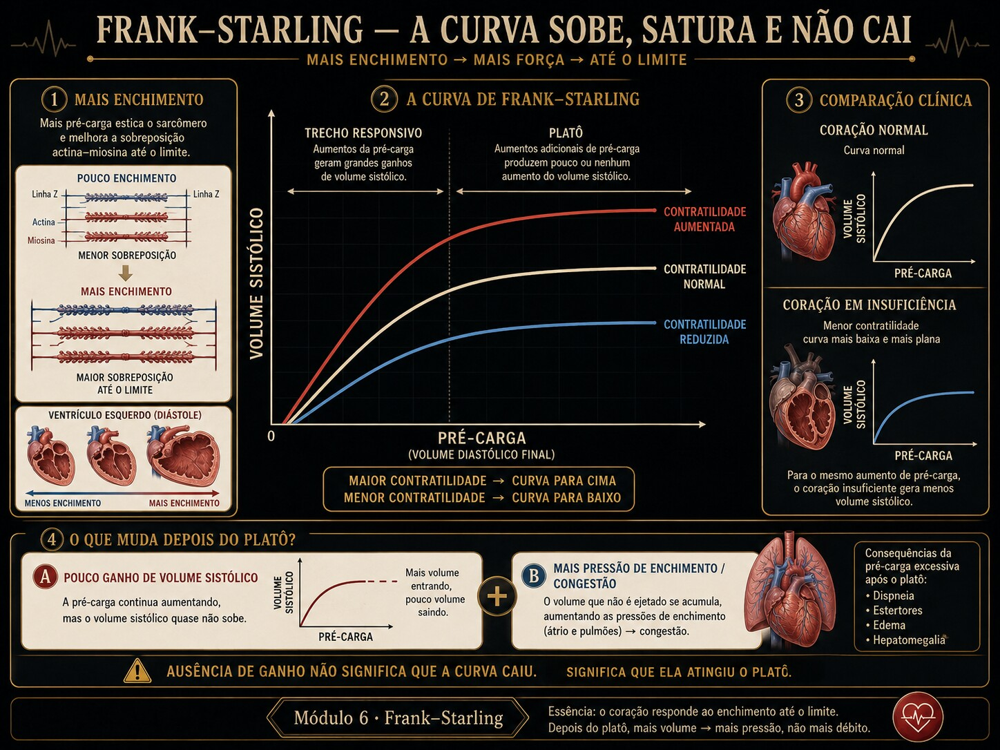

Mais enchimento, mais ejeção, até o platô. O "ramo descendente" dos livros antigos não é o sarcômero se rendendo: é a pressão de enchimento disparando enquanto o volume ejetado já não sobe. Dois eixos, duas histórias.

Fig. 6 · Frank-Starling sem ramo descendente. Depois do platô, mais enchimento produz pouco ganho de volume sistólico e maior pressão de enchimento; a curva não precisa cair.
Dois corações, a mesma pré-carga
Cinco atos. A variável escondida é que "mesma pré-carga" não significa "mesma ejeção". (Caso didático; nenhuma conduta é prescrita.)
Ato 1 · dois leitos
Dois pacientes com a mesma pressão de enchimento (Pench ~10). No papel, "pré-carga igual".
A · VS 72 mLB · VS 36 mLmesma Pench ~10
Ato 2 · a leitura ingênua
"Pré-carga adequada nos dois — ambos devem ejetar bem." Mas o débito de B é metade.
Ato 3 · a fenda
Eles estão em curvas diferentes. A de A é íngreme (contratilidade normal); a de B é achatada (falência). Mesma pré-carga, ponto operante em alturas opostas.
Ato 4 · decompor
Para B ejetar como A, precisaria de muito mais volume — e aí a Pench dispararia (EDPVR exponencial) → congestão pulmonar antes do ganho de VS. A "reserva de Starling" de B acabou.
Ato 5 · a ferramenta
As famílias de curvas e o toggle volume↔pressão mostram por que a mesma pré-carga rende ejeções tão diferentes. É o Instrumento.
▸ Revelar a variável escondida
A variável é a curva (contratilidade) em que cada coração opera. Pré-carga é o eixo x; a ejeção depende de em qual Starling você está. E "empurrar pré-carga" no coração achatado compra congestão (eixo de pressão), não débito.
Trilha socrática
Siga as setas — e cuidado com o eixo que você está olhando.
Por que mais enchimento ejeta mais?
Estiramento do sarcômero melhora a sobreposição actina-miosina e a sensibilidade ao cálcio → mais força. É a lei de Frank-Starling.
Isso cresce para sempre?
Não: satura. Perto da sobreposição ótima, mais volume rende cada vez menos VS — a curva achata num platô.
E o famoso "ramo descendente"?
No eixo VS × volume ele não existe: a curva é monotônica. O sarcômero não "se solta" fisiologicamente nessa faixa.
Então de onde vem a queda dos livros?
Do eixo VS × pressão. A relação diastólica pressão-volume (EDPVR) é exponencial: no platô, a pressão dispara enquanto o VS estagna → parece que "piora". É congestão, não overstretch.
O que muda a altura da curva?
A contratilidade: inotropismo sobe a curva inteira (mais VS na mesma pré-carga); a falência a achata. A pós-carga alta a derruba (afterload mismatch).
Por que isso importa no choque?
Porque "dar volume" só rende se você está no ramo ascendente. No platô/achatado, volume vira pressão → edema. Liga direto ao responsivo ≠ tolerante (módulo 5).
Instrumento · famílias de Starling, dois eixos
Três curvas por contratilidade (falência · normal · inotrópico). A linha vertical marca a mesma pré-carga cruzando as três — ejeções diferentes. Troque o eixo x para ver a "falsa queda" aparecer na pressão.
falência (contr 0,5)curva atualinotrópico (contr 1,5)operaçãozona de congestão
A curva atual (vermelha) acompanha a contratilidade escolhida; as cinza/verde são referências fixas. A zona vermelha à direita é onde a Pench passa de 18 mmHg (congestão).
Lab · ramo ascendente, platô ou congestão?
Cenários ou as três alavancas. O veredito vira conforme onde o ponto operante caiu; os banners explicam o mecanismo — inclusive desmontando o mito.
falênciaatualinotrópicooperaçãocongestão
Ponto operante na curva
—
Ramo ascendente. A curva é íngreme aqui: mais pré-carga ainda rende VS de verdade. Há reserva de Starling.
No platô. A curva achatou: mais volume quase não sobe o VS. O ganho acabou — o que vem a seguir é pressão.
Congestão. Pench acima de 18 mmHg: a EDPVR exponencial transformou volume em pressão retrógrada → edema pulmonar, sem ganho de débito.
O mito do ramo descendente. Não há overstretch aqui: no eixo VS×volume a curva só satura. O que parece "descer" é a congestão lida no eixo de pressão.
Inotrópico (mecanismo). Contratilidade↑ desloca a curva inteira para cima: mais VS na mesma pré-carga, e a mesma ejeção a uma pressão menor.
Afterload mismatch. Pós-carga alta rebaixa a curva: o mesmo enchimento ejeta menos. Baixar a pós-carga pode subir o VS sem tocar na pré-carga.
Avaliação · tutor gráfico
Cada questão desenha as famílias de Starling computadas ao vivo. Leia a curva, o platô e a congestão — feedback persistente.
0 / 0 respondidas
Honestidade do modelo
Material educacional · não é suporte à decisão. Ensina-se a mecânica da curva — nunca dose, alvo ou conduta para um paciente específico.
→ A Starling aqui é um saturante de Michaelis-Menten no VDF efetivo, não a relação comprimento-tensão de Adair; reproduz o formato e o platô, não a biofísica do sarcômero. → A EDPVR é exponencial idealizada, sem histerese nem interdependência ventricular. → A pós-carga é resumida num fator único (sem acoplamento Ea/Ees — isso é o módulo 7). → O "ramo descendente" é deliberadamente ausente no eixo VS×volume: a fisiologia moderna o atribui a afterload mismatch/congestão, não a overstretch — o modelo toma esse partido explicitamente. Os números são exatos dentro do modelo.